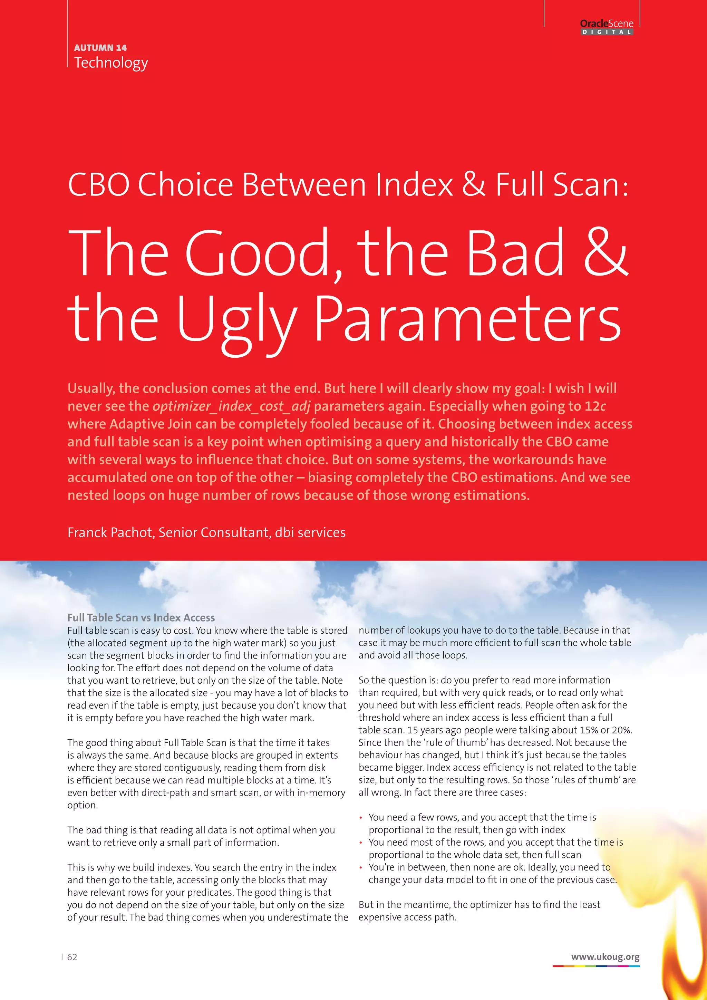
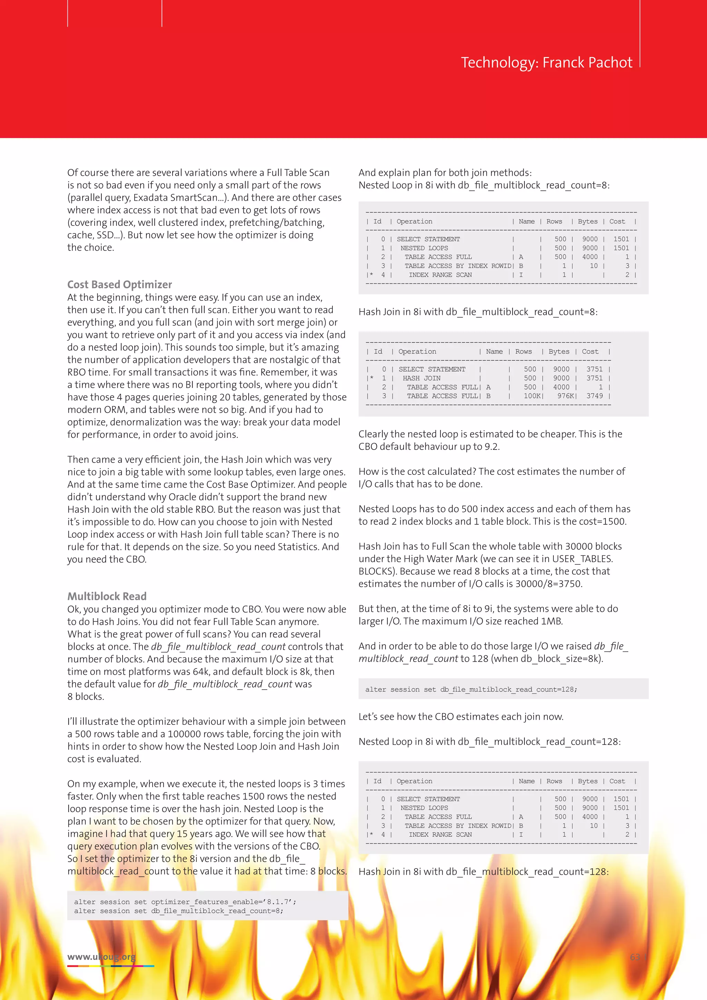
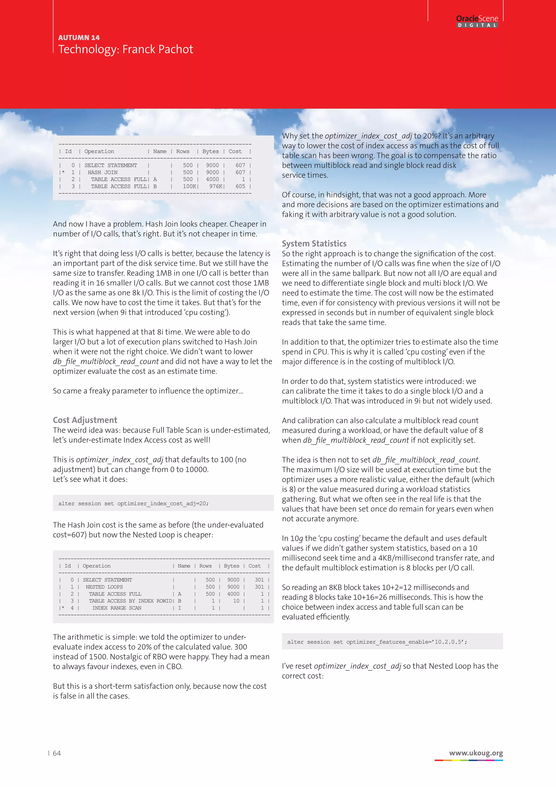
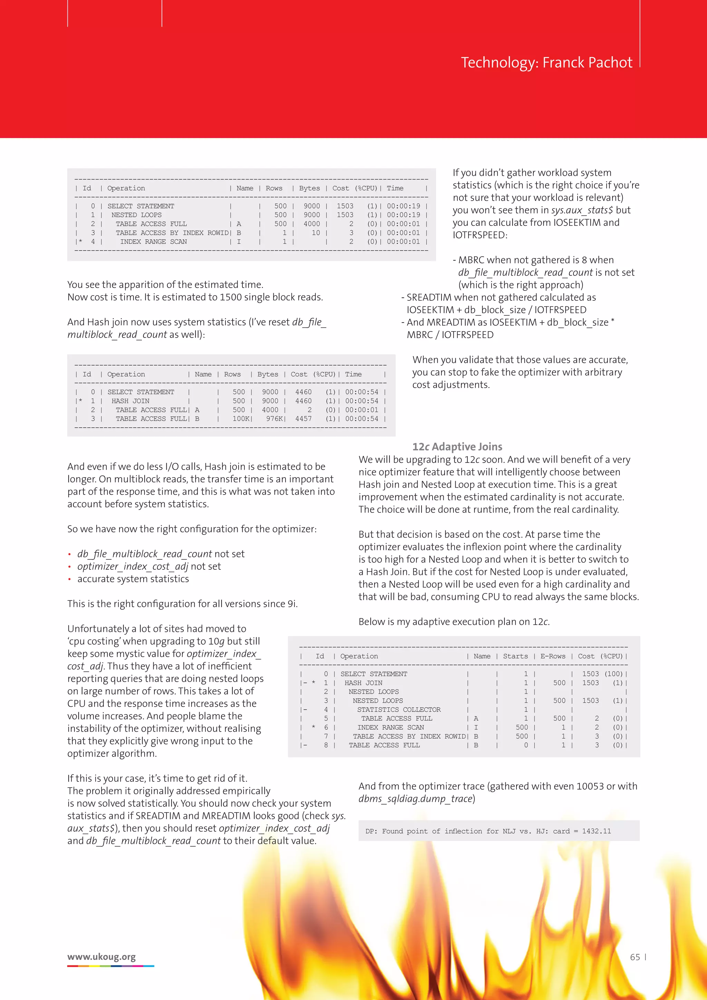
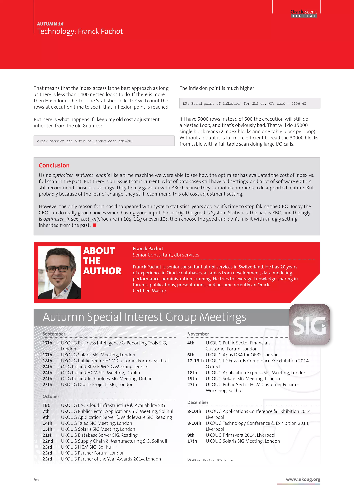

OracleScene, Autumn 2014 · Franck Pachot
A five-page OracleScene article on how the cost-based optimizer chooses index access or a full scan. It traces db_file_multiblock_read_count, optimizer_index_cost_adj, system statistics, nested loops, hash joins, and the runtime inflection point used by Oracle 12c adaptive joins.




